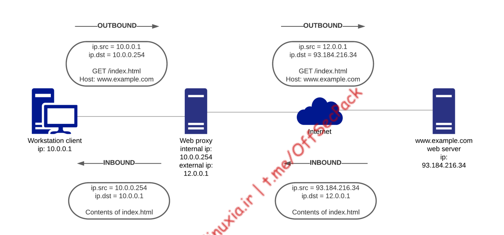

web proxies (theory)
Bypass web proxy server
- inspect and manipulate HTTP/HTTPS connections
- If a user on an internal network requests an external web-based resource, and the network
enforces the use of a proxy, the request will be sent to the proxy server, which will terminate the
connection and initiate a new one to the outside world

- it could block traffic based on fields such as the User-Agent to disallow certain browsers.
- It can also actively modify data within a connection including the HTTP headers.
- How to bypass it
- proxy aware payload
- set User-agent to a browser type legal by org